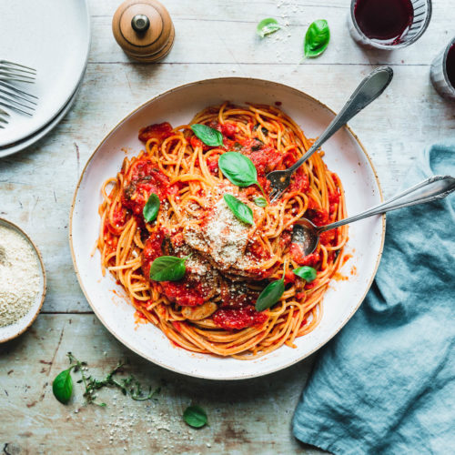

Pasta Pomodoro

Description
This is a recipe for a pasta with tomatoe sauce.
Ingridients
- Pasta
- Cherry Tomatoes
- salt, pepper etc.
- Onion
- Garlic
- Basil
Steps
- Cook the pasta in a salted pot of water.
- While the pasta is cooking, cut the onion and garlic.
- Cut cherry tomatoes in half.
- Cook the onion and garlic in a pan with oliv oil.
- Once the onion is done add the cherry tomatoes.
- Cook them until all the juices are out. Crush them to speed up the process.
- Add basil leaves to the sauce.
- Once 8 min are over add pasta water and the pasta to the pan.
- Cook for 2 minutes.
Return to main page